A friendly tourist took a picture of me next to the Auckland skyline on Mt. Eden.
Mt. Eden is a scoria cone, formed during a volcanic explosion.
Another picture of Auckland Domain.

My last day in Auckland I did the Hobbiton Tour along with Waitomo Caves.

The view from Bilbo’s house. Why did he want to leave Bag End again?
![The second part of my tour was the Waitomo Glowworm Caves. Unfortunately, pictures were not allowed in the cave due to destroying the glowworm environment, so I took a picture outside of the cave. Glow worms are insect larvae (gnats in this particular case) which produce a blue-green bioluminescence. My group took a boat ride in the cave. We were not allowed to talk during the boat ride. When you looked up you could see thousands (if not millions) of lights almost like stars on the ceiling of the cave.](resources/images/3.jpg)
The entry point of Waitomo Glowworm Caves.

The Cove gets its name from the naturally formed “Cathedral” archway shown here.

This picture illustrates how popular of a tourist spot Cathedral Cove is.

The steep cliffs are illustrated in this last pic I took on my walk back to Hahei.
Walking around Tauranga, a little bit south of the Coromandel.

The view from the top of Mount Maunganui. The town shown in this picture is also named Mount Maunganui.

There was a free geothermal park located in the city.
The turquoise color of the pool is more apparent in this picture.
A view of Ohinemutu, situated on the Rotorua Lake. You can see the steam from the geothermal pools within and surrounding the community.
Lake Rotorua – The second largest lake in the North Island of New Zealand.
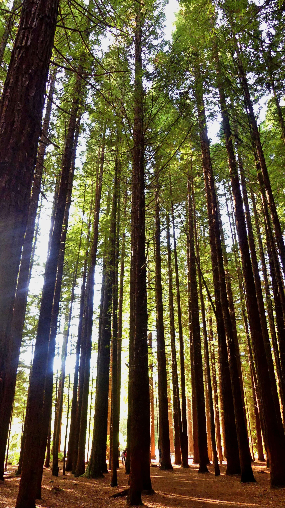
The last activity I did on my first day in Rotorua was visiting the Whakarewarewa Redwood Forest.

My favorite hike I did in New Zealand was the Tongariro Crossing.
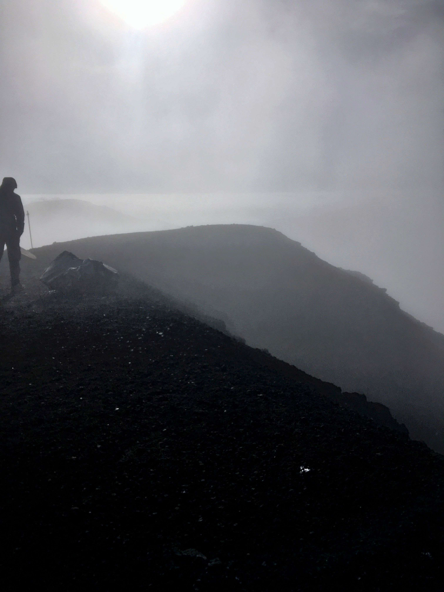
Reaching the highest point of the Tongariro Crossing, right after the Red Crater Summit.

Wellington consisted of these rolling hills that immediately went up to the ocean.

Torrin Joined me for the South Island of New Zealand, our first stop being Christchurch. Our day there we hiked the Bridle Path, a 6 km return hike.

Torrin amazed at the massiveness of this redwood.
The Avon River in the Christchurch Botanical Gardens.

The view from the top of the Searly Tarns Trail.

Me at the Hollyford Valley Lookout.
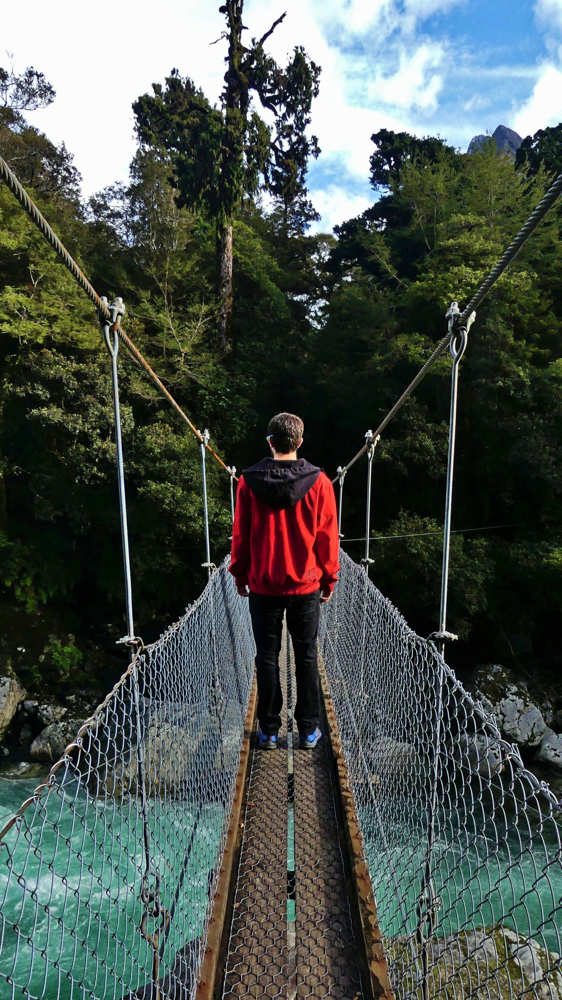
On our way to the Milford Road we stopped at this swingbridge over the Hollyford River.

Just FYI, there is no editing to the color of this water. The water is literally this turquoise color.

Another view of the Moraine Creek track swingbridge.

A Kea bird interested in us.

To be honest, it wasn’t hard getting a good picture of this bird. It was almost like it WANTED it’s picture taken.
The Kea had obviously learned that food existed in cars and was trying very hard to get inside of the vehicles.

This picture is to show the steepness of the surrounding mountains next to the water. Waterfalls like this one were extremely common to see.

At the end of the Milford Sound, looking back at the fjord. The mist made everything even more beautiful..

The beginning of the Ben Lomond Track. You can see the summit we are hiking to in the distance.
Making some progress (about a third of the way up). Lake Wakatipu’s beautiful deep blue water in the distance.

The other side of the ridgeline is Mountain Aspiring (in the clouds) and Mount Aspiring National Park.

Torrin and I made it to the summit of Ben Lomond! As you can see, the sun was incredibly strong and we couldn’t keep our eyes open for a picture.
Me walking down from the summit with Lake Wakatipu in the background.
Queenstown lies on the edge of Lake Wakatipu and near the Remarkables mountain range. Queenstown is considered the “Banff of New Zealand” with four ski areas nearby.
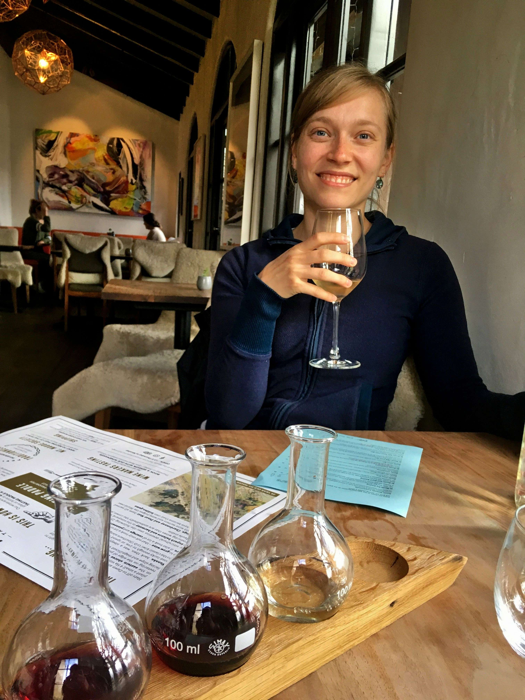
Types of wines at this particular winery (not sure if this goes for all wines in New Zealand) definitely have different signature tastes to them.
A great depiction of what the landscape looks like in the Northwestern part of the South Island.
On the edge of Abel Tasman National Park were these green rolling hills, similar to the North Island.

The steep cliffs are illustrated in this last pic I took on my walk back to Hahei.

When reaching higher points on the walk, the forest would turn into shrubbery and a sandy trail overlooking the ocean.
After descending from the views, Torrin and I arrived at our last beach on the hike.

The seal colony was incredibly huge with seals just lying around everywhere.
When reaching higher points on the walk, the forest would turn into shrubbery and a sandy trail overlooking the ocean.

A close-up of one of the seals.

Skyline of Auckland from Mt. Eden (Maungawhau), a dormant volcano. This picture was taken on my hike up to the top.
![This is Auckland’s most famous museum – The War Memorial Museum. This is where I learned how volcanic eruptions are a huge concern here in New Zealand, and so are earthquakes. Inside this museum there was actually a simulation of a volcanic reaction. You sit in a fake house and watch the news, and through the window of the house you can see the active volcano Rangitoto erupting and the lahar (water and rock fragments) coming straight at you. There is also so much history and information about the Maori culture.](resources/images/30.jpg)
This is Auckland’s most famous museum – The War Memorial Museum.
A yellow flower about to bloom. I am not sure what plant this is but my guess is a Kawhai tree which is native to New Zealand.

Just missed this hobbit.
Bilbo Baggin’s house, which is located on top of Bag End. Apparently the higher you live on the hill, the higher status you have.

My next stop after Auckland was the Coromandel. The Coromandel landscape is basically hills that drop into the ocean with temperate rainforests.

One of the famous stops in the Coromandel is Cathedral Cove.

The trail overlooking the town of Hahei, a small settlement in the Coromandel.
One of the main activities to do in Tauranga is to hike the volcano Mount Maunganui. This picture is the beginning of the trail.
The view of the beach from the top of Mount Manguanui.
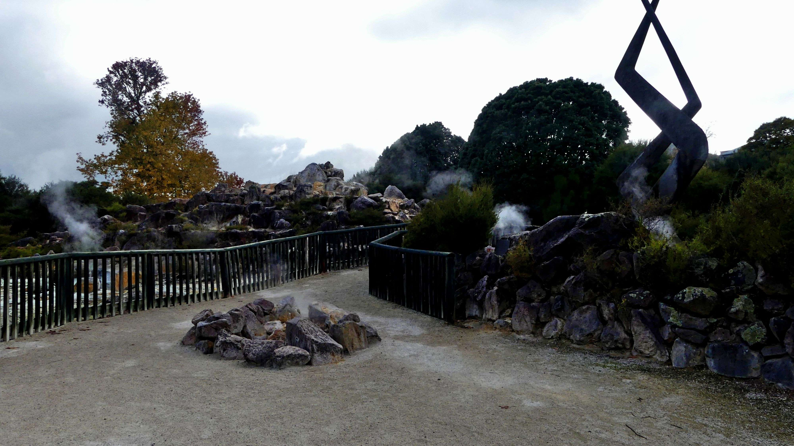
A better overall picture of the park, though the park was massive and took me about an hour to really see a chunk of it.

Here lies a living Maori village, Ohinemutu, on the edge of Rotorua.
Close up picture of a redwood.
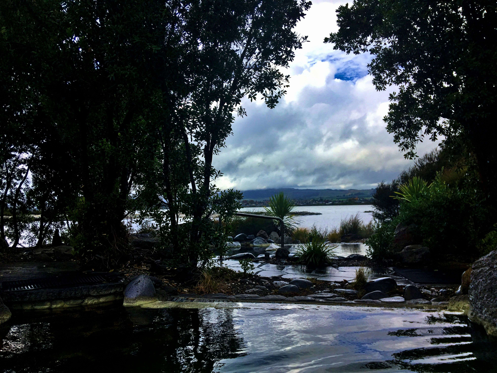
On my second day in Rotorua, I visited the Polynesian Spa on the shore of Lake Rotorua.
Another picture illustrating the various landscapes the Tongariro Crossing passes through.
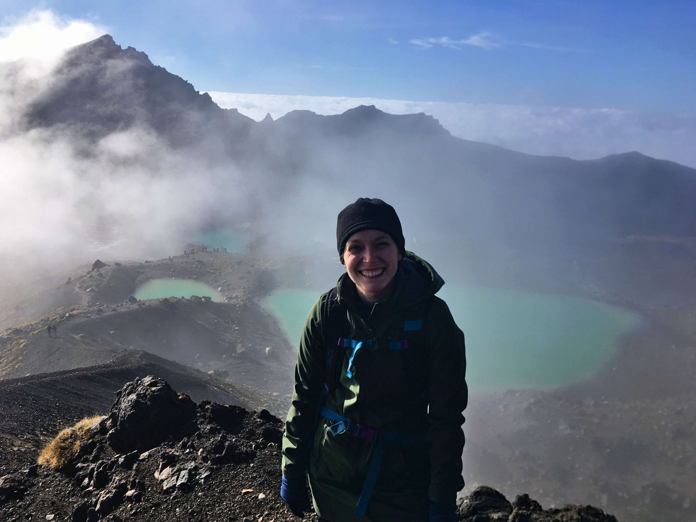
A woman I was hiking with took a picture of me with the Emerald Lakes.
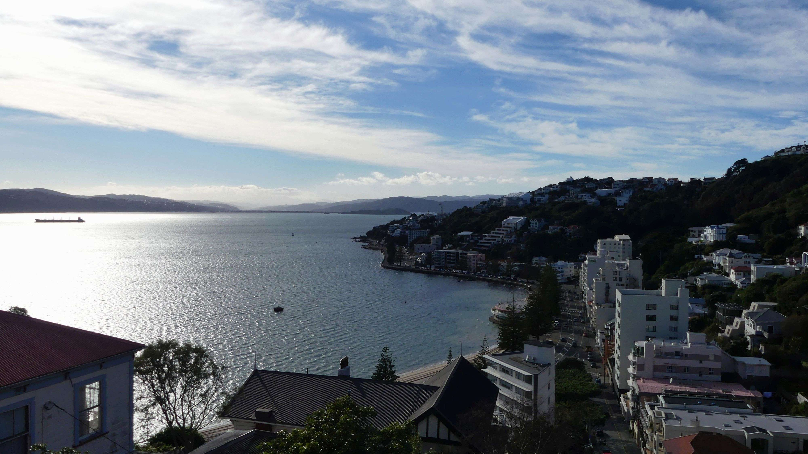
The shoreline in Wellington.

View from the top of the Bridle Path. The hike was first constructed in 1850 and was the first foot route across the Port Hills from Christchurch to Lyttelton.
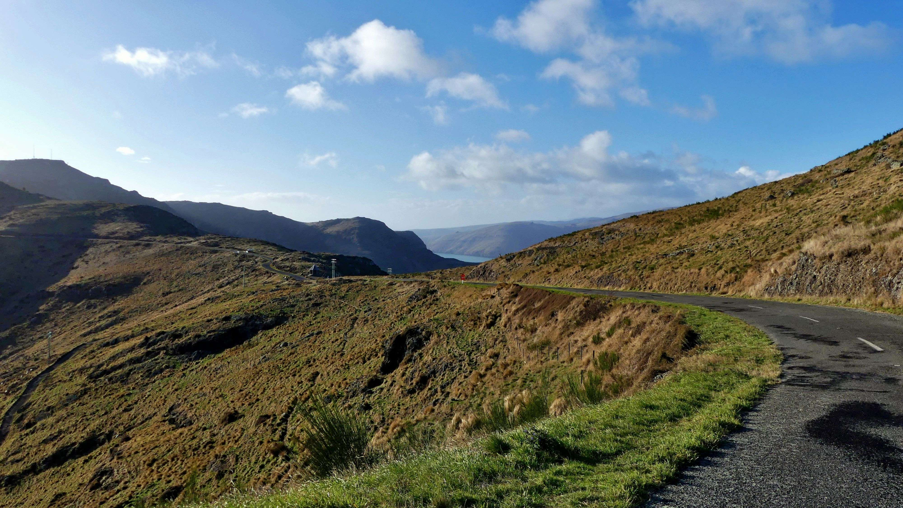
Walking along the Bridle Path.
Looking down at the town Lyttleton.
Torrin at the Christchurch Botanical Gardens.
Just arriving at Mount Cook National Park, we had a good view of Mount Sefton.
To be honest I am not sure what peak this is, but this picture illustrates the landscape we were hiking in.

In this picture you can’t see very well but there is a pool of water to the left. A hundred years ago the Mueller Glacier filled where this lake is and the whole valley floor. Today the glacier ice is still visible, but just to the opposite end of the lake.

Looking outside of the National Park while about to begin the Searly Tarns Trail in the National Park.
The Te Anau Glow Worm Caves.

Eglington Valley. This valley was carved out by glaciers thousands of years ago.
Torrin and I took a side road from the Milford Road and went to hike about 30min to Humboldt Falls. Pretty sure this is the largest waterfall I have ever seen.
Once at the Homer Tunnel, the landscape competely changes into an Alpine environment.
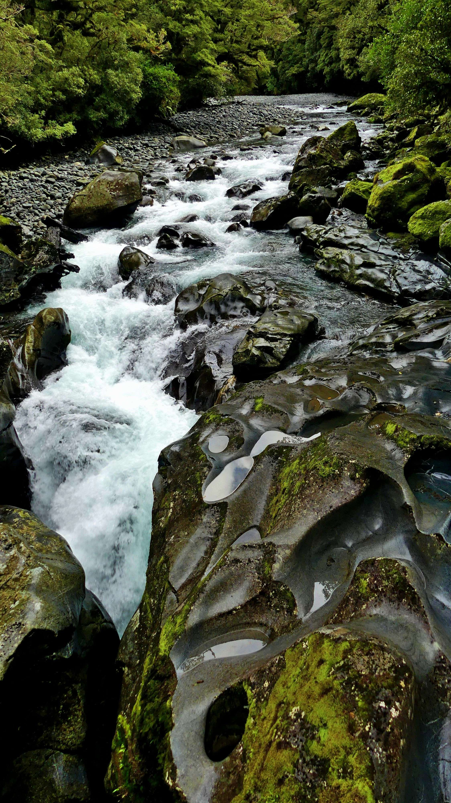
After Homer Tunnel Torrin and I stopped to do another short walk in the Chasm area. The Chasm is a series of gushing waterfalls. This is a picture is of the Cleddau River.

Our walk to the Chasm area. As you can see, the environment became very tropical again.

At one point during the cruise dolphins were following the boat.
![Contrasting colors of dead and alive Douglas Fir with Lake Wakatipu. Douglas Fir was sown on the lower slopes of Cemetery Hill as part of a beautification project in the late 19th century. Since the 1960’s following the culling of feral goats to help spread the seeds (which Torrin and I encountered on the trail), the trees have spread quickly, even more than in their natural environments, and are destroying the natural alpine environment of the area. These dead Douglas Firs are most likely part of a control method to help preserve the area.](resources/images/126.jpg)
Contrasting colors of dead and alive Douglas Fir with Lake Wakatipu.

At this point we are at the Saddle. It is at this point we see feral goats.

View from the summit looking over Queenstown once again and the Remarkables Mountain Range.

We decided to put our sunglasses on.
View from the summit looking over Queenstown once again and the Remarkables Mountain Range.

Roy's Peak in the clouds.
Punakaki Beach on the Northwest shore of the South Island. Unfortuntely at this point of the trip it was pouring 2-4 inches a day for three days..
In Christchurch I was lucky enough to think of buying a waterproof (and warm!) coat.

Torrin walking on the beach, trying to find the Abel Tasman Coast Track.
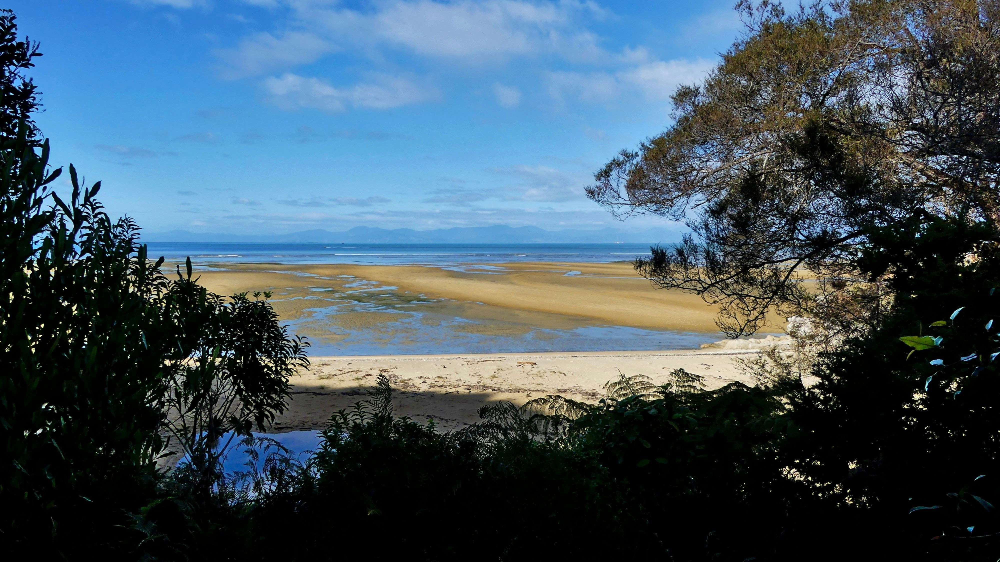
You can see the mountains of the South Island in the distance, since the Great Walk lies in a bay area in the north part of the South Island

One of the many beach areas along the Great Walk.
Another picture of the ocean view at the end of our hike on the walk.
Our water taxi to take us back to Marahau, the beginning of our trek. The water taxi was a great way to see the bay next to the national park, with deep blue waters. We also cruised by the Split Apple Rock.

Our last destination in our travels was visiting the town of Kaikouri, famous for its various sea life.

Another picture of the seal colony area, with snow capped mountains in the distance.

The last thing Torrin and I did before heading back to Christchurch was sit on this beach in Kaikoura and watch dolphins and humpback whales jumping in the ocean while eating lunch.


![Cook’s beach is where Captain James Cook landed his ship. Cook was the first explorer to land on New Zealand and actually map the coastline. Apparently Cook was also the first explorer to create a lasting relationship with the Maori people. Former explorers were mistakenly responding to Maori’s war call on the beaches, making the indigenous people attack the ships when they came upon shore. Once this communication barrier was understood, the Maori people were open to trade and learning about the world beyond their island.](resources/images/50.jpg)